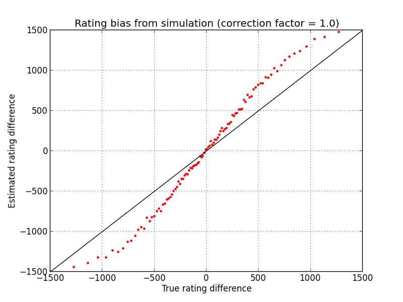

The Foos rating calculator is meant to do two things:
Using similar methods to an Elo rating system, the probability that Team A will score any particular point is computed based on the rating difference between Team A and Team B. With this probability of success per point, the distribution of final game scores is computed, and the teams' ratings are adjusted toward the maximum likelihood difference between ratings corresponding to the actual game score.
The basic probability model is that each particular point in a game is scored by Team A with a weight that depends on a power of their rating difference. The actual probability to win the game is different from this simple (binomial) weight, since we have to calculate the probability that one or the other team will score 5 point before the other does so. This probability can be calculated with a recursive rule and efficiently implemented using the memoization method from dynamic programming. (If still interested, look at the javascript for the app where this is computed!)
Here's a simulation showing 100 games and corresponding rating changes for two teams that start with the same rating, but where one team is better than the other. You can see that by about 10 games played, the ratings have diverged significantly, and the better team has a higher rating for every game after the first one.
If you look closely, you can see that the average rating is a little bit off from the solid lines. This is revealing a bias in the rating estimates, which we can systematically account for by discounting the point spread a bit (see, for example, Nate Silver's discussion of this phenomenon). A correction factor of 1.0 corresponds to no correction, while a correction factor less than 1.0 reduces the point spread at large rating differences. The two figures below show that a correction factor of 0.7 does a good job correcting over a large range of ratings.

Have fun!
Enter ratings between 1000 and 2000 to see the point spread.
Enter a game score to update ratings.